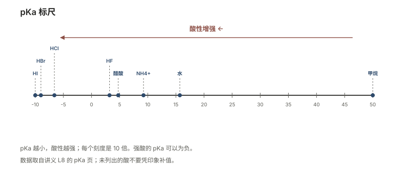

CHE105 · 第 8 章
酸性、碱性与 pKa
Acidity, Basicity & pKa
虚线下划线为术语；悬停查看中文、英文与释义，完整词典见“术语”。
本章目录
本讲先把酸碱的定义从 Brønsted 推进到 Lewis，再用 Ka 与 pKa 把“强弱”变成可比较的数字，最后落到一条统一原则：酸性由共轭碱的稳定性决定，碱性由共轭酸的稳定性决定。
本章要点
- Brønsted 酸给质子、碱接受质子；接受的方式是提供一对电子形成成键。
- Lewis 酸是电子对接受体、Lewis 碱是电子对给体，覆盖面比 Brønsted 更广。
- 没有化合物天生是酸或碱：HCl 在气相不电离，在水中才给出质子。
- pKa = −log Ka；pKa 越小酸性越强，pKa 是酸半解离时的 pH。
- 影响酸性的四个因素：H–A 键强度、共轭碱的离域、诱导效应、杂化状态。
- 碱性用共轭酸的 pKaH 衡量：pKaH 越大碱性越强；苯胺的孤对被苯环离域，碱性远弱于环己胺。
- EDG 稳定正电荷、去稳定负电荷；EWG 相反；两者通过诱导与共轭两条通道起作用。
8.1 从厨房到实验室：酸碱就在身边
讲义用一组家用物质开场。常见的酸：醋酸（acetic acid，食醋与番茄酱）、柠檬酸（citric acid，柑橘类与果酱）、乳酸（lactic acid，乳制品）、抗坏血酸（ascorbic acid，即维生素 C）、硫酸（H2SO4，蓄电池与管道疏通剂）。常见的碱：小苏打（碳酸氢钠）、肥皂与洗涤剂、抗酸药（碳酸钙或氢氧化镁，靠中和过量胃酸起效）、漂白水（次氯酸钠，溶液本身呈碱性）。
讲义专门用一页讲混合的危险，因为这是酸碱反应在生活中的极端版本：漂白水加醋（或任何酸）放出氯气；漂白水加氨水放出氯胺气体；漂白水加外用酒精生成剧毒的三氯甲烷（chloroform）。讲义还给了异丙醇与次氯酸钠反应的方程式，说明“家用化学品不能随便混”的化学依据是氧化与卤代，不只是简单的中和。
这些例子的作用是建立直觉：酸与碱不是实验室里的抽象分类，而是“能给质子/能接受质子”这一条性质在不同分子上的表现。接下来要把这条性质定义清楚。
L8 p.2–4
8.2 Brønsted–Lowry：给质子与接受质子
Brønsted–Lowry 定义Brønsted–Lowry definition只有两句话：酸是质子给体（proton donor），碱是质子受体（proton acceptor）。酸 HA 失去质子后剩下的 A− 叫该酸的共轭碱conjugate base；反过来，碱 B 接受质子后变成 BH+，叫它的共轭酸conjugate acid。一对“酸 + 对应的碱”合称共轭酸碱对conjugate acid-base pair。
讲义特意纠正了一种写法：把酸写成“HA → A− + H+”并不严格。质子不会自己解离出来在溶液里漂浮，它总是连着某个东西；酸所做的其实是把质子交给一个能接受它的物种。所以真正的反应式必须两边都写出授受双方，例如 HA + B → A− + BH+。
还有一条常被忽略的前提：碱要“接受”质子，唯一的办法是提供一对电子去和质子成键。这句话把 Brønsted 的“接受质子”翻译成了电子语言，也为下一节的 Lewis 定义铺路。
L8 p.6–8
8.3 Lewis 定义：电子对的给与受
Lewis 定义Lewis definition换了一个更广的视角：Lewis 酸Lewis acid是电子对接受体（electron acceptor），Lewis 碱Lewis base是电子对给体（electron donor）。两者结合生成一个 Lewis 酸碱加合物（Lewis acid-base complex）。
之所以说“更广”，是因为这个定义把质子也算作 Lewis 酸——质子本身就能接受一对电子。讲义列出的常见 Lewis 酸是 BF3、TiCl4、SnCl4、AlCl3：它们都有空轨道，能接受未共用电子对，甚至连 π 电子这种“共用但不紧绑”的电子对也能接受。这一点在有机反应里非常重要——AlCl3 能活化卤代烃、能抓取羰基氧的孤对，正是“接受 π 或孤对”的能力。
用电子语言统一之后，酸碱反应就是“一对电子从碱流向酸”的过程。这也解释了为什么第 7 章的离域会影响酸碱性：孤对一旦被离域进 π 体系，就不再“可用”于给电子，碱性随之下降。
L8 p.9–10
8.4 没有天生的酸：反应必须成对
讲义给出一句很硬的判断：没有任何化合物本身是酸或碱。一个化合物只有在把质子交给某个东西时才表现为酸；要发生酸碱反应，必须同时存在一个碱。
证据是 HCl 的两副面孔。在气相中，HCl 解离成 H+ 与 Cl− 的 ΔG°298K = +1347 kJ·mol−1，数值大到反应根本不发生。把 HCl 溶进水中，反应立刻进行：HCl + H2O → H3O+ + Cl−。同一个 HCl，在气相不是酸，在水中是强酸——差别不在 HCl，而在有没有水这个碱来接质子。
这条原则的实用价值在于：判断“某分子是否显酸性”时，必须同时问“对谁显酸性”。这也解释了后面 pKa 的测量为什么都以水为参照溶剂——pKa 是相对于溶剂给出的数字，不是分子的绝对属性。
L8 p.11–12
8.5 把强弱变成数字：Keq、Ka 与 pKa
比较酸强度，就是比较它们在水中的平衡位置。对 HA + H2O ⇌ H3O+ + A−，平衡常数写成
稀溶液中水的浓度近似恒定，把它并进常数里，就得到酸解离常数acid dissociation constant：
因为 pKa 前面有负号，方向是反的：pKa 越小，Ka 越大，酸性越强；pKa 越大，酸性越弱。讲义用三组数据把“数量级”讲清楚：醋酸的 pKa = 4.75（Ka = 1.8 × 10−5）；氢氟酸的 pKa = 3.2（Ka = 6.3 × 10−4），比醋酸强约 1.5 个数量级；盐酸的 pKa = −6.6（Ka = 3.98 × 106），比醋酸强约 10 个数量级。硫酸（蓄电池酸）比醋酸强，也是同一套比较的结果。
注意 pKa 可以是负数：强酸的 Ka 大于 1，取对数后为负。负 pKa 不代表“没有 pKa”，只代表酸性强到平衡几乎完全偏向产物。

绘图提示词
Clean vector horizontal pKa scale from minus 10 on the left to 50 on the right, with tick marks and labeled points for HI at minus 10, HBr at minus 9, HCl at minus 6.6, HF at 3.2, acetic acid at 4.75, ammonium at 9.24, water at 15.7 and methane at 50, a shaded arrow above the scale reading stronger acid toward the left, and small molecular formulas under each label. Flat 2D, thin 1.5 px strokes, muted slate blue and warm grey palette, white background, English labels, no cartoon, no gradient, no shadow.
L8 p.13–15
8.6 pKa 与 pH：Henderson–Hasselbalch 与半解离
把 Ka 的表达式取负对数并整理，得到讲义给出的关系：
这个式子有三个直接可用的结论。第一，当 [A−] = [HA] 时对数项为零，pH = pKa——所以pKa 就是酸半解离时的 pH。第二，pH 高于 pKa 时 [A−] > [HA]，平衡偏向共轭碱；pH 低于 pKa 时偏向酸。第三，Ka 越大 pKa 越小（负号的作用），酸性越强。
讲义用 pKa = −7 与 pKa = 4.8 两个例子练习这套换算：给定 pH，判断溶液中以哪种形式为主。这类判断在实验里非常实用——萃取extraction就是靠调 pH 让有机物在“中性、溶于有机相”与“成盐、溶于水相”之间切换：加 HCl 把碱性杂质变成盐转入水相，加 NaCl 盐析帮助分层，再用碱把产物游离出来。

L8 p.16–19
8.7 影响酸性的四个因素
讲义把影响酸性的因素归为四条：① H–A 键的强度；② 共轭碱容纳负电荷的能力（离域或诱导）；③ 结构特征与官能团；④ 杂化状态。前两条是主线。
键强。H–A 键越弱，质子越容易脱去，酸性越强。卤化氢的顺序是 H–F（pKa 3）→ H–Cl（−7）→ H–Br（−9）→ H–I（−10）：键长增加、键能下降，酸性依次增强。这里要注意方向：电负性 F 最大，但酸性最弱，因为决定这一步的是键的强度而不是电负性。
共轭碱的离域。负电荷越分散，共轭碱越稳定，酸性越强。乙醇的 pKa = 15.9，负电荷定域在一个氧上；醋酸 pKa = 4.8，负电荷离域到两个氧上；硫酸 pKa = −1.9，负电荷离域到三个氧上。三个数字排成一条清晰的阶梯：定域 → 两个氧 → 三个氧，酸性依次跃升约 11 个与 6.7 个数量级。
诱导效应。诱导效应inductive effect是电荷沿 σ 键传递的效应，由电负性差驱动。电负性大的原子（如 Cl、NO2 中的氧）通过 σ 键把电子密度拉走，从而稳定负电荷。它的关键特征是随距离迅速衰减：3-氯丁酸与 4-氯丁酸的 pKa 都与丁酸相近，因为氯离羧基太远，诱导作用已经传不过去。
杂化状态。s 成分越高，电子越靠近核，负电荷越稳定，酸性越强。讲义给出的规律是“酸性随 s 成分增加而增大”，因为 s 轨道中的电子离核更近。

L8 p.20–23、p.28–32
8.8 酚与硝基酚：离域与诱导叠加
酚（phenol）失去质子后生成酚氧负离子phenoxide anion。负电荷不是固定在氧上，而是离域进苯环，落在邻位与对位——讲义特意点出这个位置规律，因为它是后面判断取代基效应的基础。环上有三个位置能分担电荷，酚因此比醇酸性强得多。
把硝基装到环上，酸性继续攀升。硝基是强吸电子基，既能通过共轭（把负电荷拉到硝基的两个氧上）又能通过诱导（氧的电负性）稳定酚氧负离子。数据是：对硝基酚 pKa = 7.14；2,4,6-三硝基酚（苦味酸）pKa = 0.7，酸性强到同时具有爆炸性。三个硝基的效应是叠加的，这与“多个 EWG 会累加”的规律一致。
维生素 C 是另一个可量化的例子：抗坏血酸的 pKa = 4.2，比醋酸（4.75）还低。它的共轭碱把负电荷离域到两个氧上，稳定性超过醋酸根，所以酸性更强。讲义把这一页与酚放在一起，是在说明同一条判据（共轭碱的离域范围）可以解释天然产物与合成酸的强度差别。

Clean vector resonance diagram of the phenoxide anion: a benzene ring with O minus at the top, three curved arrows showing the negative charge moving into the ring and appearing at the two ortho positions and the para position, each resonance contributor drawn as a separate small hexagon with the negative sign on the ring carbon, and the para and ortho positions marked with small labels. Flat 2D, thin 1.5 px strokes, muted slate blue and warm grey palette, white background, English labels, no cartoon, no gradient, no shadow.
L8 p.24–27
8.9 碳氢酸与碳负离子
把 C–H 上的质子拔掉，得到的是碳负离子carbanion。碳的电负性不如氧、氮，负电荷得不到有效的容纳，所以这类“碳氢酸”（carbon acids）大多是弱酸。讲义把它们单列一节，是因为它们是后面 C–C 成键的起点：稳定化的碳负离子往往就是很好的亲核试剂。
让碳负离子稳定的办法与稳定其他共轭碱一致：在其邻位装上吸电子基。吸电子基通过诱导与共轭把负电荷拉走，碳负离子越稳定，对应的 C–H 酸性越强。这条逻辑在后续章节会反复出现——第 10 章的有机金属试剂本质上就是“金属把碳变成碳负离子”，第 12 章的烯醇负离子化学也建立在同一原理上。
L8 p.33–35
8.10 碱性：用共轭酸的 pKaH 排队
碱性强弱不看碱本身，而看它的共轭酸。讲义给的判据是：共轭酸的 pKaH 越大，碱性越强。以氨与水的对比为例：H2O 的 pKa = 15.7，NH4+ 的 pKaH = 9.24；水是更强的酸，因此它的共轭碱 OH− 是比 NH3 更强的碱。
胺的碱性取决于氮上孤对的“可用程度”。任何拉走电子密度、或让孤对参与离域的因素都会降低碱性：
- 苯胺 vs 环己胺：苯胺（aniline）的孤对离域进苯环，环己胺（cyclohexylamine）的孤对定域在氮上，所以苯胺是弱得多的碱。
- 取代苯胺：环上带甲氧基（EDG）时碱性增强，带硝基（EWG）时碱性减弱；讲义的同题练习里，甲氧基取代的苯胺是“最强碱”。
- 酰胺：氮的孤对已被 C=O 离域（第 7 章），几乎不可用，所以酰胺“并不碱”。
- 脒（amidine）：质子化后正电荷能在两个氮之间离域，共轭酸特别稳定，因此脒比普通胺更碱。
把这条线索与酸性那条并起来看，整章其实只有一句结论：决定酸碱性的是共轭碱（或共轭酸）的稳定性。酸性强 = 共轭碱稳定；碱性强 = 共轭酸稳定。
L8 p.36–44
8.11 EDG 与 EWG：两条通道，一张总表
补充材料把取代基的效应整理成一对概念。给电子基electron-donating group（EDG）通过共轭或诱导把电子密度推向体系或相邻位置，能稳定正电荷、去稳定负电荷；吸电子基electron-withdrawing group（EWG）相反，拉走电子密度，稳定负电荷、去稳定正电荷。
两条通道要分清：诱导效应inductive effect走 σ 键，由电负性差驱动，随距离迅速衰减；共轭效应resonance effect走 π 轨道重叠，靠孤对或 π 电子离域，作用距离可以很远。同一个基团常常两条通道都用——硝基就是“共轭 + 诱导”双管齐下的典型，而 CF3 主要靠强诱导。
常见 EDG 的强度顺序：−N(CH3)2 > −NH2 > −OH > −OCH3 > −CH3；烷基靠超共轭（hyperconjugation）给电子，在这组里是最弱的。常见 EWG 的顺序：−NO2 > −CF3 > −CN > −SO3H > −COOCH3（酯基是较弱的受体）。
把效应落到酸性上：EWG 稳定共轭碱，所以增强羧酸与酚的酸性；EDG 去稳定共轭碱，所以减弱酸性。取代苯甲酸是最好的检验：R 为 EWG 时，共轭碱比苯甲酸根更稳定，酸性强于苯甲酸；R 为 EDG 时相反。讲义还强调，多个 EWG 的诱导效应会累加，但这种增强随相隔 σ 键数目增加而迅速衰减——这与 3-氯/4-氯丁酸的 pKa 接近丁酸是同一件事。
| 维度 | EDG（给电子基） | EWG（吸电子基） |
|---|---|---|
| 电子密度 | 推向体系或相邻位置 | 从体系或相邻位置拉走 |
| 稳定什么 | 稳定正电荷（碳正离子） | 稳定负电荷（共轭碱、碳负离子） |
| 对酸性的影响 | 减弱（共轭碱更不稳定） | 增强（共轭碱更稳定） |
| 对胺碱性的影响 | 增强（氮上电子密度升高） | 减弱（氮上电子密度降低） |
L8 p.20–31；EDG vs EWG p.2–14